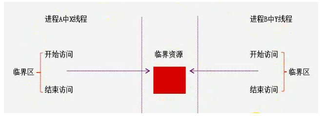
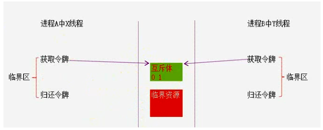
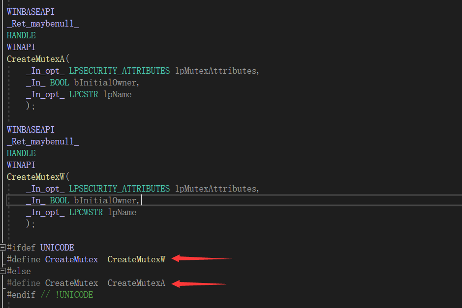

# 内核级临界资源怎么办

# 跨进程的线程控制之互斥体

很少用到快进程的线程控制，如打印机。
在一个进程中对互斥的控制完全没有必要起名字。
示例代码
进程一： | |
HANDLE g_hMutex = CreateMutex(NULL,FALSE, "XYZ"); | |
进程二： | |
HANDLE g_hMutex = OpenMutex(MUTEX_ALL_ACCESS,FALSE, "XYZ"); | |
WaitForSingleObject(g_hMutex,INFINITE); | |
// 逻辑代码 | |
ReleaseMutex(g_hMutex); | |
进程三： | |
HANDLE g_hMutex = OpenMutex(MUTEX_ALL_ACCESS,FALSE, "XYZ"); | |
WaitForSingleObject(g_hMutex,INFINITE); | |
// 逻辑代码 | |
ReleaseMutex(g_hMutex); |
# CreateMutex 函数
创建或打开一个已命名或未命名的互斥对象
# 函数声明

# 参数详解
# lpMutexAttributes
SECURITY_ATTRIBUTES lpMutexAttributes ，指定一个 SECURITY_ATTRIBUTES 结构，或传递零值（将参数声明为 ByVal As Long，并传递零值），表示使用不允许继承的默认描述符
# bInitialOwner
BOOL bInitialOwner ，如创建进程希望立即拥有互斥体，则设为 TRUE。一个互斥体同时只能由一个线程拥有
# lpName
String lpName ，指定互斥体对象的名字。如已经存在拥有这个名字的一个事件，则打开现有的已命名互斥体。
# 代码
#include<stdio.h> | |
#include<stdlib.h> | |
#include<windows.h> | |
int main(int argc, char* argv[]) | |
{ | |
// 创建一个互斥体 | |
HANDLE g_hMutex = CreateMutex(NULL, FALSE, TEXT("test")); // 第三个参数：随便起一个名字 | |
// 获取令牌 | |
WaitForSingleObject(g_hMutex, INFINITE); | |
for (int i = 0; i < 10; i++) | |
{ | |
Sleep(1000); | |
printf("%d\n", i); | |
} | |
// 释放令牌 | |
ReleaseMutex(g_hMutex); | |
getchar(); | |
system("pause"); | |
return 0; | |
} |
# 互斥体与线程锁的区别
- 线程锁只能用于单个进程间的线程控制
- 互斥体可以设定等待超时，但线程锁不能
- 线程意外终结时，Mutex 可以避免无限等待
- Mutex 效率没有线程锁高
# 通过互斥体防止程序多开
#include<stdio.h> | |
#include<stdlib.h> | |
#include<windows.h> | |
int main(int argc, char* argv[]) | |
{ | |
HANDLE hMutex = CreateMutex(NULL, FALSE, TEXT("防止多开")); | |
//1. 第一次打开程序的时候 GetLastError () 返回值为：0 | |
//2. 第二次打开程序的时候 GetLastError () 返回为：ERROR_ALREADY_EXISTS | |
//3. 其它情况则是程序出错 | |
DWORD dwRet = GetLastError(); | |
if (hMutex) | |
{ | |
if (ERROR_ALREADY_EXISTS == dwRet) // 如果是第二次打开程序，直接关闭进程 | |
{ | |
printf("程序已存在\n"); | |
system("pause"); | |
CloseHandle(hMutex); | |
return 0; | |
} | |
} | |
else | |
{ | |
printf("创建失败，程序退出\n"); | |
system("pause"); | |
CloseHandle(hMutex); | |
return 0; | |
} | |
while (1) | |
{ | |
Sleep(1000); | |
printf("程序执行中.....\n"); | |
} | |
return 0; | |
} |